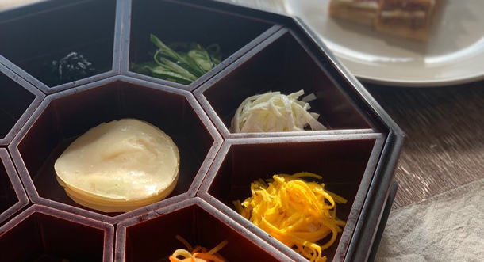

한식조리기능사 자격증반
출제 기준 메뉴 반복 훈련으로 실기 합격을 준비하는 한식 자격증 전문반
커리큘럼 자세히 보기
국가공인 한식조리기능사 실기 합격을 목표로 하는 자격증 전문반입니다. 출제 기준 메뉴를 반복 실습하며 칼질·불 조절 같은 기본기부터 시험 당일 시간 배분 전략까지 체계적으로 다집니다.
이런 분께 추천
- 취업·이직에 필요한 국가자격증이 급한 분
- 한식 기본기를 제대로 배우고 싶은 분
커리큘럼 요약
- 기초 이론
- 칼질·재료 손질
- 종목별 실기 반복훈련
- 모의시험
- 실전 대비
연계 진로 : 한식당·급식·외식업 취업, 정통한국요리 심화 과정